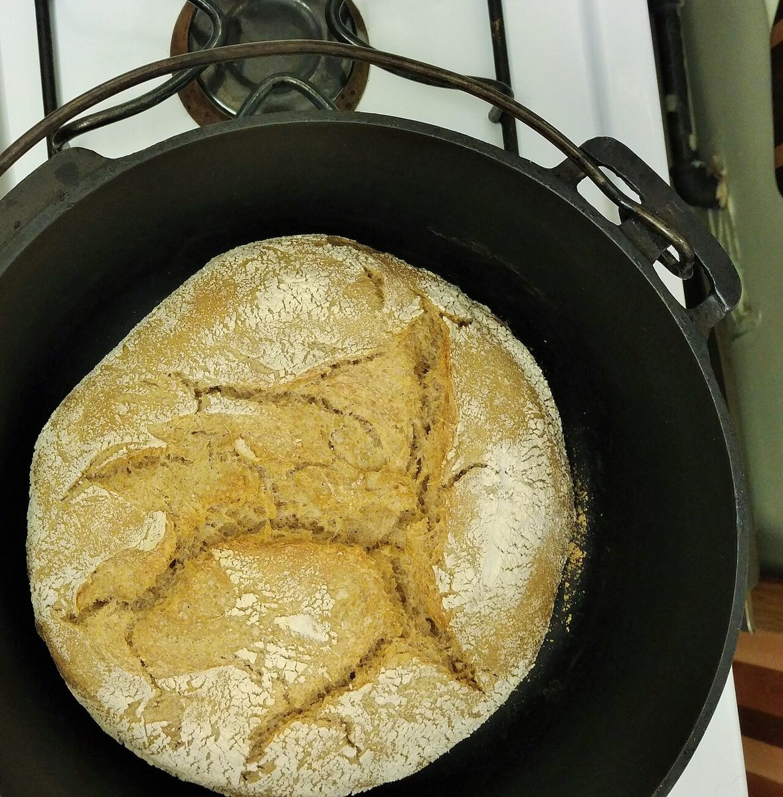

01 / 05コトコトポットが小さく鳴る音

制作側の連想です。屋号「cafe Ding Dong」の響きから「音」を思い浮かべ、5ページを5枚の擬音カードにしてみました。お店の理念・由来とは無関係で、店内の音や提供内容を示すものでもありません。
イメージ写真
道具と素材のクローズアップ
お店の写真ではありません。音を連想させる物のイメージです。


ご案内(確認できたものだけ)
お店の情報
| 所在地 | 兵庫県明石市魚住町清水２０３２ |
|---|---|
| 電話 | 078-219-5176 |
| 営業時間 | 準備中 |
| 定休日 | 準備中 |
| ご予約 | 準備中 |
| 駐車場 | 準備中 |
| @cafe_ding_dong |